Bienvenue !
Ici l'ordinateur se montre sous un autre jour.
Chaque carte est une facette de l'ordinateur, et chaque couleur un niveau:
Les types d'ordinateurs,
Les organes qui les composent,
Les matières premières,
Les usages que l'on en fait, et pour finir,
Les grands phénomènes
à l'échelle des sociétés.
1
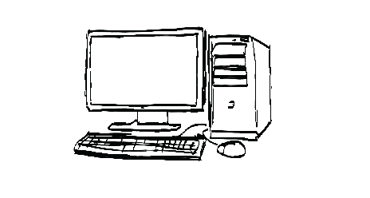L'ordinateur
C’est une machine programmable qui réalise des calculs (addition, soustraction, multiplication, division) et mémorise des informations bien mieux que les humains. Depuis le milieu du 19e siècle, on en aurait produit plus de 3 milliards alors que nous sommes 7 milliard d’humains sur Terre.
2
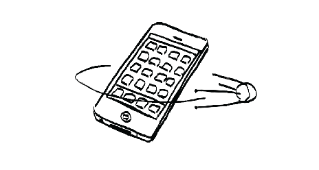Les smartphones
Il est le fruit de la miniaturisation de l’électronique. Les internautes connectés depuis un mobile sont aujourd’hui plus nombreux que ceux connectés depuis un PC. L’iphone 4 était déjà plus puissant que la fusée Appolo 11, qui nous a envoyée sur la Lune.
3
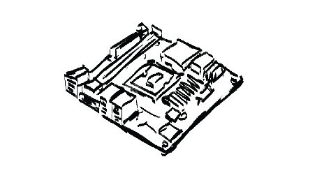La carte mère
C'est le chef d'orchestre de l'ordinateur qui commande les autres composants et périphériques. (mémoire vive, carte réseau, clavier, USB...). Le microprocesseur, composant essentiel est enchâssé dans la carte mère, et réalise tous les calculs.
4
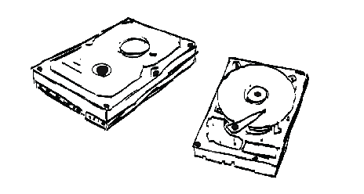Le disque dur
C'est la mémoire principale de l'ordinateur, où sont rangées les données de l’utilisateur. Ces données sont inscrites sur des disques magnétiques réinscriptibles presque à l’infini. On y trouve aussi le logiciel permettant de faire fonctionner l’ordinateur : l’OS ou Operating System.
5
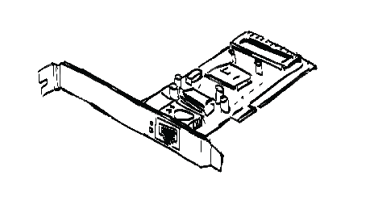La carte réseau
La carte réseau permet à l'ordinateur personnel de se connecter à des réseaux (réseaux locaux, internet...) constitués d’autres ordinateurs personnels, ainsi qu’à des serveurs de stockage de données.
6
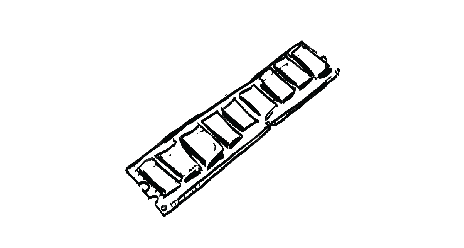La mémoire flash
Elle est branchée sur la carte mère. Elle facilite le calcul des opérations en stockant des données de manière temporaire, ainsi, la carte mère peut utiliser les données plus vite.
7
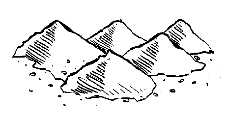Les terres rares
Une fois extraites et transformées, elles servent à construire les composants électroniques. Elles sont présentes sur toute la planète, mais on les dit “rare” car il existe peu de gisements exploitables. C’est en Chine qu’on trouve la plupart de ces gisements.
8
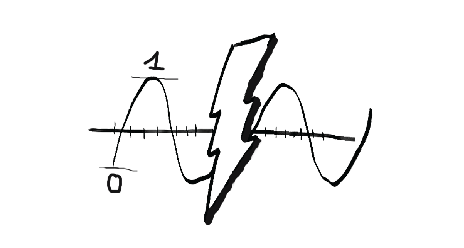L'electricité
En France, on estime que les technologies informatiques représentent 15% de la consommation électrique du pays. En circulant dans les composant, l'électricité permet aussi de déplacer les données pour réaliser les fameux calculs de base.
9
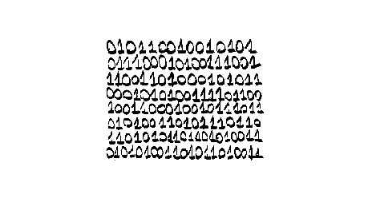Le code binaire
Il sert à passer de l'électricité aux opérations. Il est
composé uniquement de 0 et de 1, qui permettent d’encoder des
chiffres et des lettre.
En binaire, libre = 01101100 01101001 01100010 01110010 01100101
10
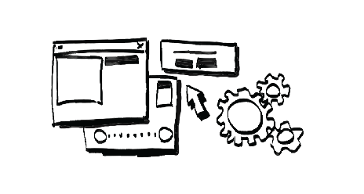Les logiciels
Partie immatérielle de l’ordinateur, ils servent de relais entre l’utilisateur et l’ordinateur, pour transformer les clics de souris en résultats visibles sur l’écran. Il y a 2 grandes familles de logiciel : les propriétaires (windows ou apple) payant et “cachés” et les open-source, gratuit et modifiable (Linux, firefox…).
11
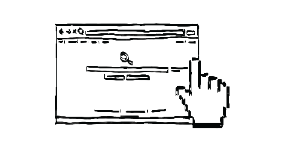Les interfaces utilisateurs
Au début de l’informatique, elles prenaient la forme de cartes à trous, ou bien de lignes de commandes. Aujourd’hui, elles sont la dernière couche qui nous sépare de la complexité de la machine. Elles ont permis une diffusion massive de l’utilisation des ordinateurs.
12
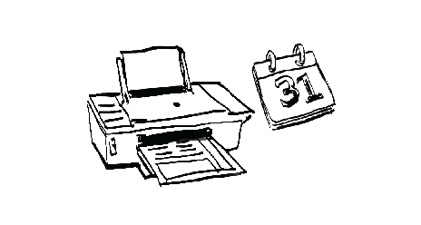Pour les entreprises
Traitement de texte, stockage & traitement de données, messagerie… En automatisant des tâches répétitives les entreprises ont généré des gains de productivité énormes, mais pas forcément de création d’emploi. Dans les pays développés, on estime que 50% des emplois actuels pourraient être automatisés avec l'informatique.
13
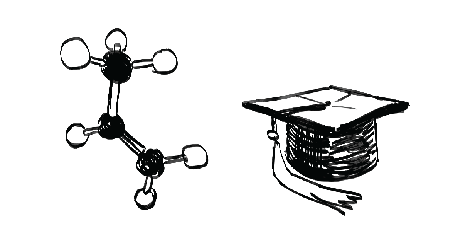Pour la science
L’ordinateur est le résultat de la recherche scientifique. Et réciproquement, de nombreux domaines de la recherche ont connus des avancées considérables grâce à l’informatique (aéronautique, médecine, télécommunication, mécanique…)
14
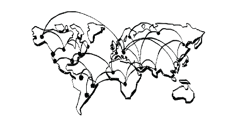Les réseaux
Il y aurait plus d’un million de Km de câbles au fond de nos océans. Grâce à eux, plus de 4 milliards d’utilisateurs se connectent tous les jours à internet depuis leurs ordinateurs et leur téléphones, et génèrent des quantités énormes de données.
15
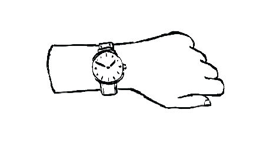Le temps d'utilisation
En 1 journée, un smartphone est utilisé en moyenne 220 fois par son détenteur, de plus en plus pour se connecter en ligne. Mais le web est aussi peuplé de robots, programmes autonomes qui représentent 56% du trafic internet, contre seulement 44% pour les humains.
16
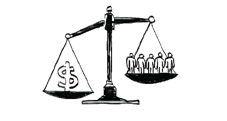Le poids économique
Le secteur informatique emploie plusieurs dizaines de millions de personnes dans le monde, et génère 362 milliards de dollar en 2011, soit l’équivalent du PIB de la Norvège ou l’Autriche.
17
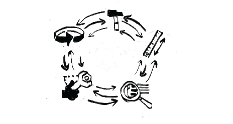L'obsolescence programmée
Dans l’univers de l’informatique, les langages utilisés pour construire des applications évoluent, les composants électroniques sont de + en + puissants, et 1 employé sur 3 a conscience que sans évolution de leurs compétences ils ne pourront pas suivre cette cadence.
18
Les monopoles
Au delà des promesses de partage de la connaissance et de connexion, le monde de l’informatique représente un marché gigantesque que seule une poignée d’acteurs se partagent le gâteau ; Google est le site le plus populaire du monde, suivi par Facebook et Youtube.
Pour en savoir plus sur l'informatique, vous pouvez aussi prendre contact avec :
Fait par Justine Hannequin - haniju.fr